파일 다운로드 후
먼저 수정하고 업드로 해주세요!
💡첨부해드린 모바일청첩장 파일을 다운로드한 뒤, PC로 먼저 수정하고 html파일을 여러번 열어보며 확인 후 GitHub에 업로드하는 것이 가장 편합니다. (github에 업로드 후 commit시 시간이 1~2분 소요 됨)
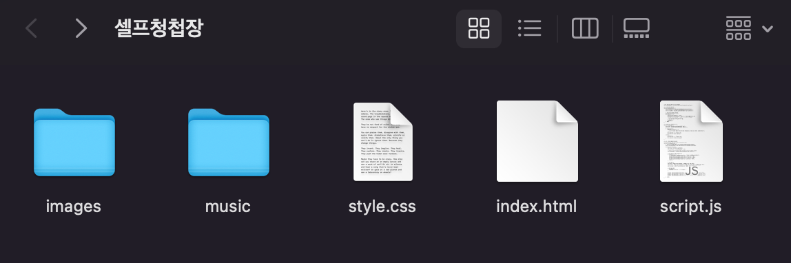
파일 수정 방법
index.html 수정하기
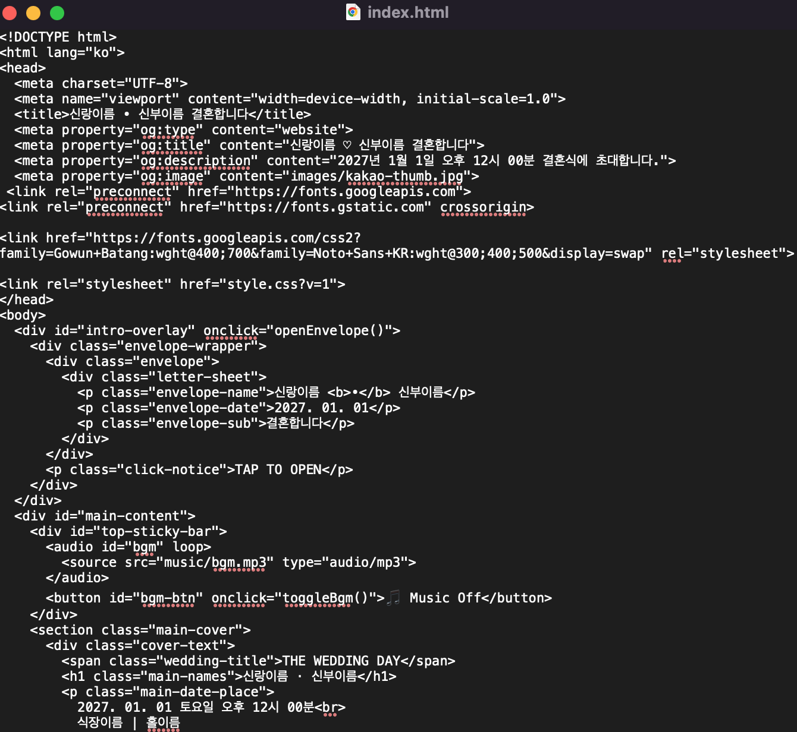
💡신랑신부 이름, 혼주 성함, 식장 이름, 홀 이름, 결혼식 날짜와 시간, 약도 등을 수정할 수 있습니다.
문구 작성 시 글자 사이에 <br>을 넣으면 줄바꿈이 됩니다.
사진 추가하기
💡갤러리 사진을 추가하려면 아래 코드를 복사한 뒤, 사진 번호만 변경해서 사용하세요.
<div class="gallery-item">
<img src="images/photo0.jpg" alt="갤러리0"
onclick="openModal(this.src)"
onerror="this.parentNode.style.display='none';">
</div>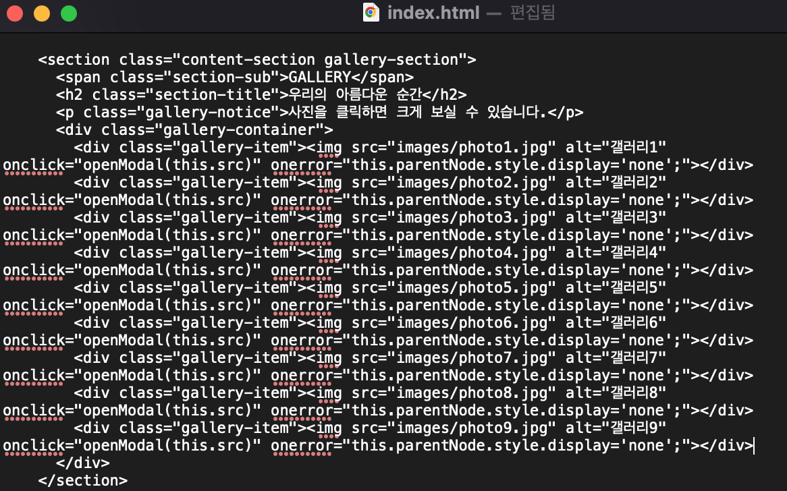
약도와 지도 링크 수정하기
💡index.html과 script.js에서 약도 내용을 수정할 수 있습니다.
- 카카오맵, 네이버지도, T맵은 각 앱에서 공유 링크를 복사해 붙여넣어 주세요.
- 네비게이션 설정은 https://map.kakao.com/?nil_profile=title&nil_src=local 사이트에서 확인할 수 있습니다.
- 공유하기 - HTML태그복사 - 소스생성하기 - 소스 알맞는 곳에 붙여넣기
- index.html에서 로 되어있는곳 소스 찾아서 붙여넣기
- script.js에서 timestamp: "",key: "", 로 되어있는곳 소스 찾아서 붙여넣기
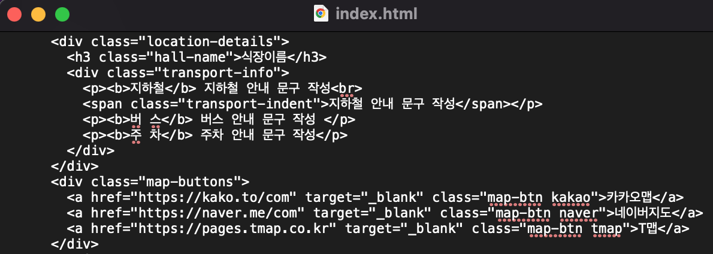
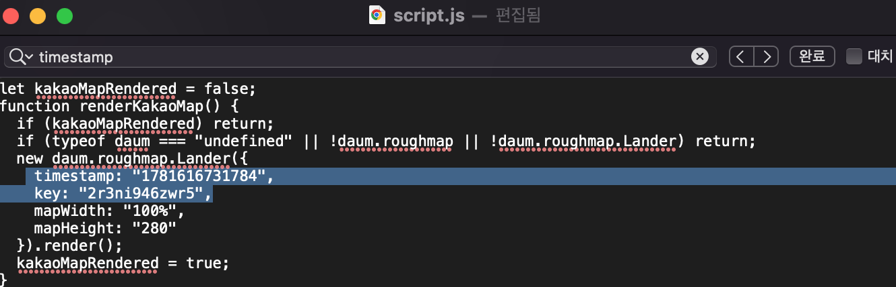
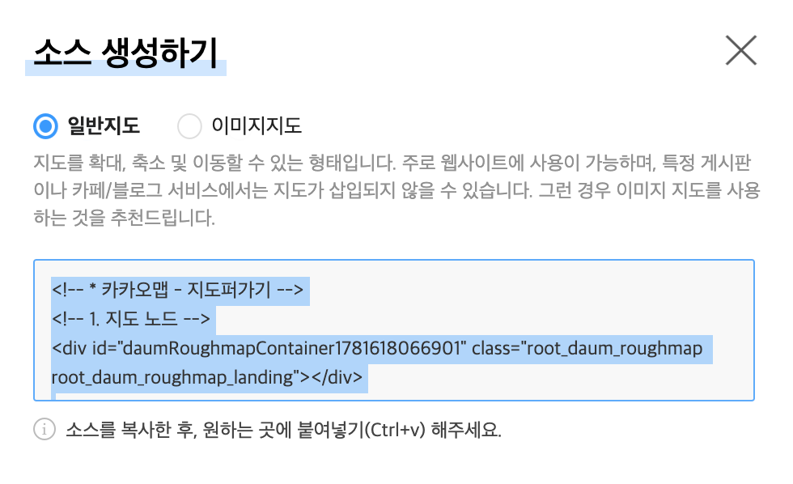
- 네비게이션 좌표는 모바일청첩장 배포 후 버튼을 눌렀을 때 사용됩니다.
배포전 하얀배경 정상 입니다.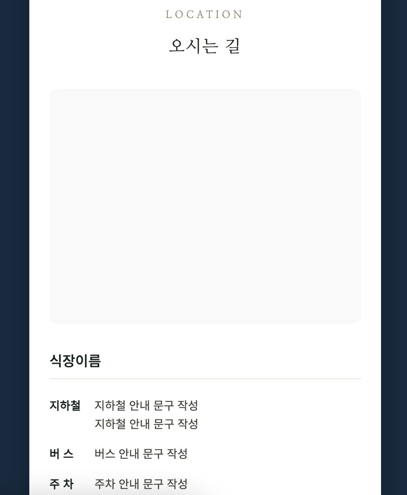
4단계날짜 수정하기
💡script.js 맨 위에 있는 날짜를 수정하면 달력과 D-day 날짜가 변경됩니다.
기본 날짜는 2027년 1월 1일 12시 00분으로 설정되어 있습니다.
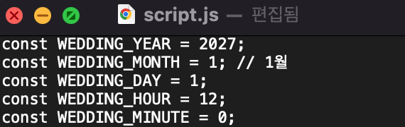
GitHub 가입하기
1. GitHub 사이트 접속
💡 https://github.com/ 접속 후 오른쪽 위 Sign up 버튼을 클릭합니다.
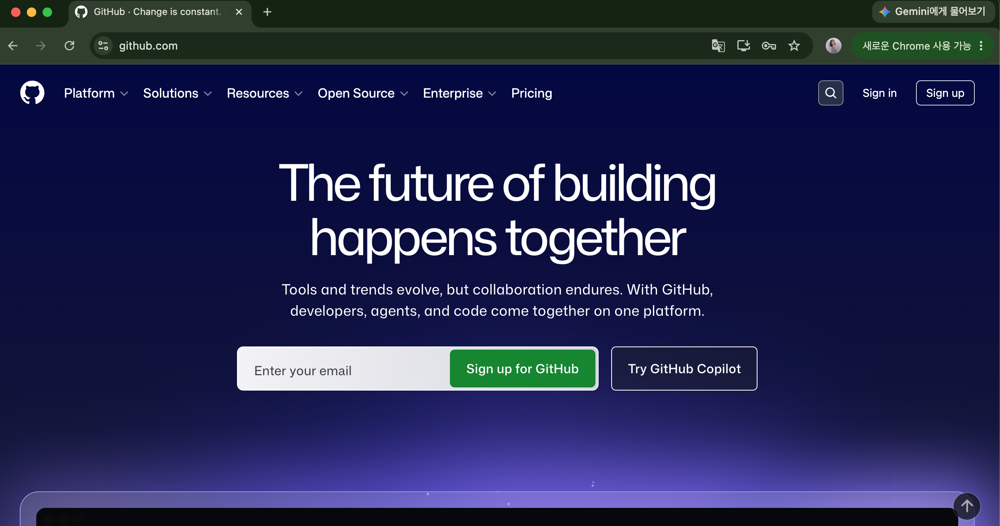
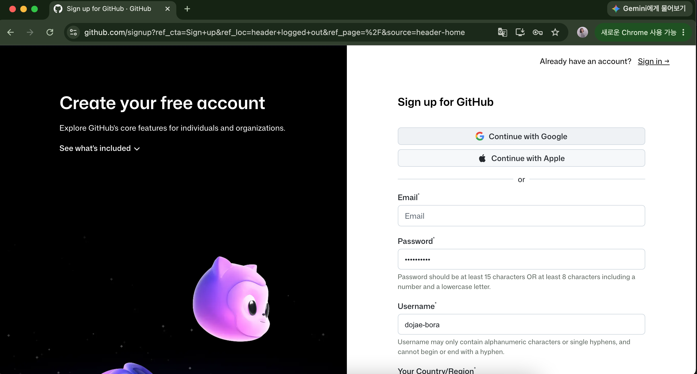
2. 회원가입하기
- 자주 사용하는 이메일을 입력합니다.
- 영어, 숫자, 특수문자를 섞어 비밀번호를 만듭니다.
- GitHub 아이디를 입력합니다.
아이디는 모바일청첩장 주소 맨 앞에 들어가므로 신중히 정해주세요. 언더바(_)는 사용할 수 없고, 하이픈(-)은 사용할 수 있습니다.
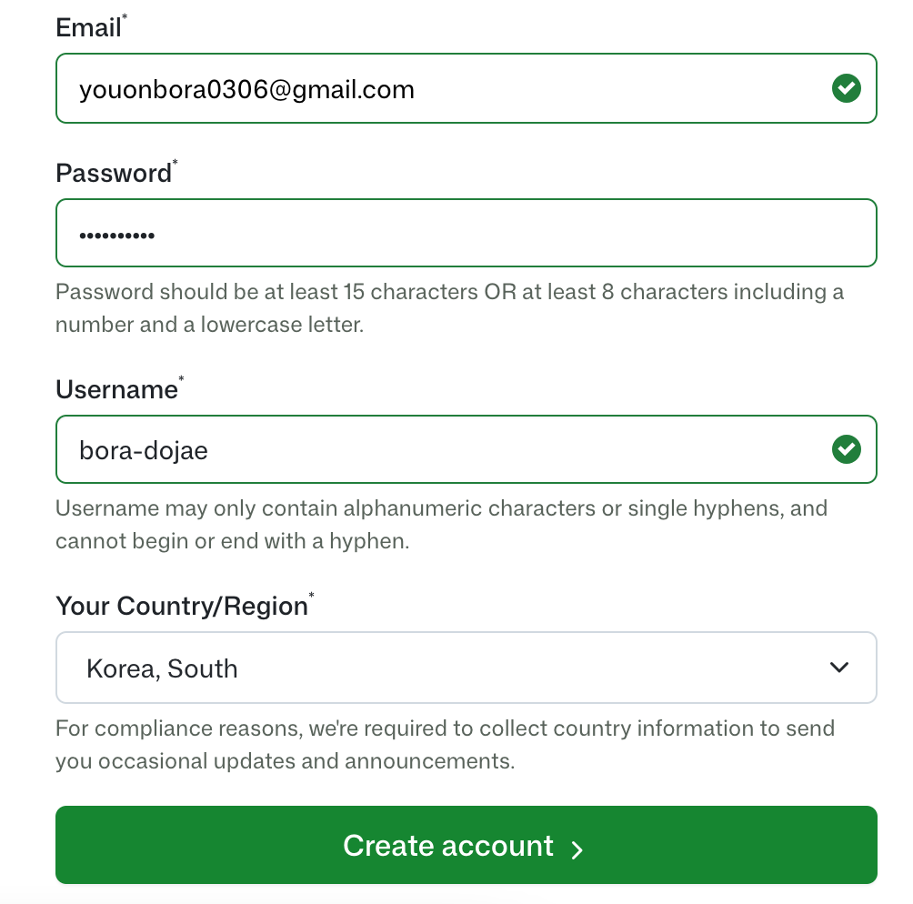
3. 로봇 확인과 이메일 인증
💡퍼즐 또는 그림 인증을 진행한 뒤, 입력한 이메일로 온 인증 메일을 확인하면 가입이 완료됩니다.
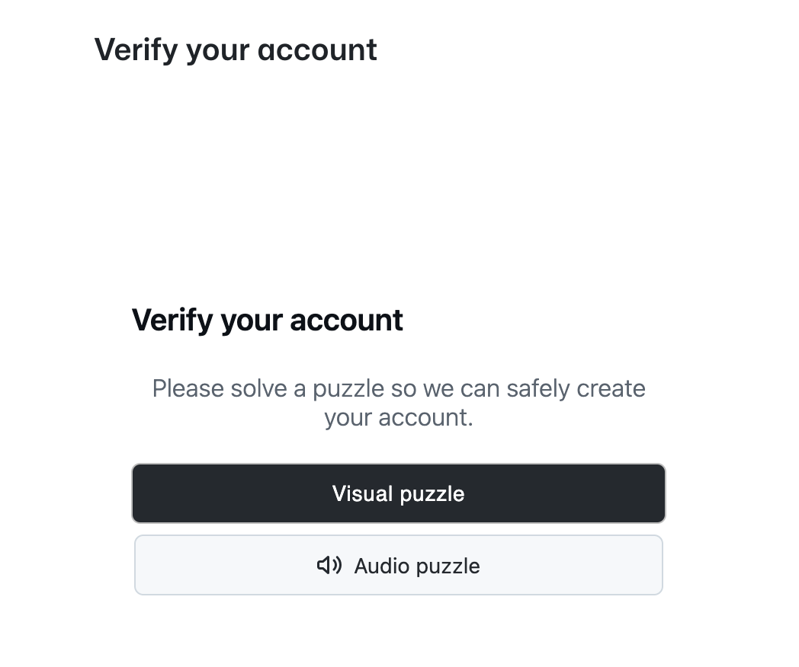
모바일청첩장 배포하기
1단계새 저장소 만들기
💡GitHub 로그인 후 왼쪽의 New 버튼 또는 오른쪽 위 + 버튼을 눌러 New repository를 클릭합니다.
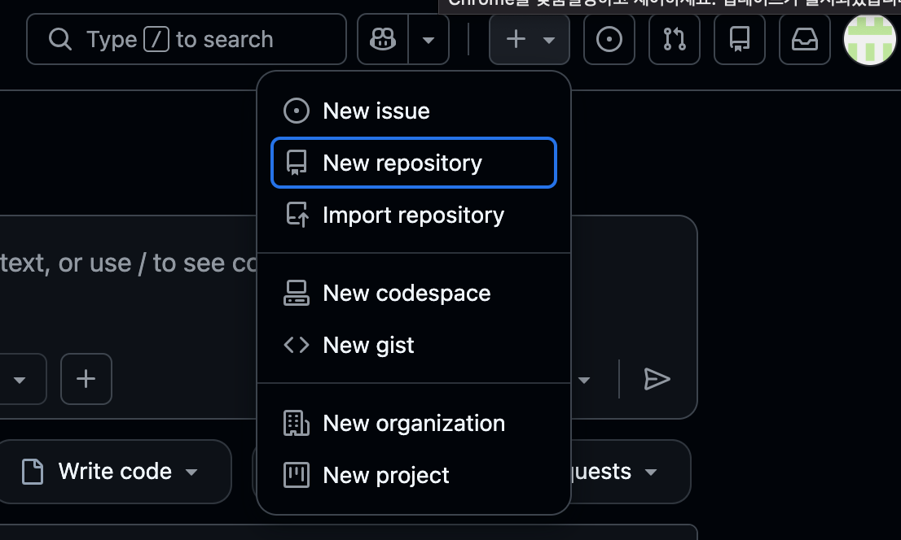
💡Repository name에는 주소 뒤에 붙을 이름을 입력합니다.
예시 주소: https://아이디.github.io/레포리지이름/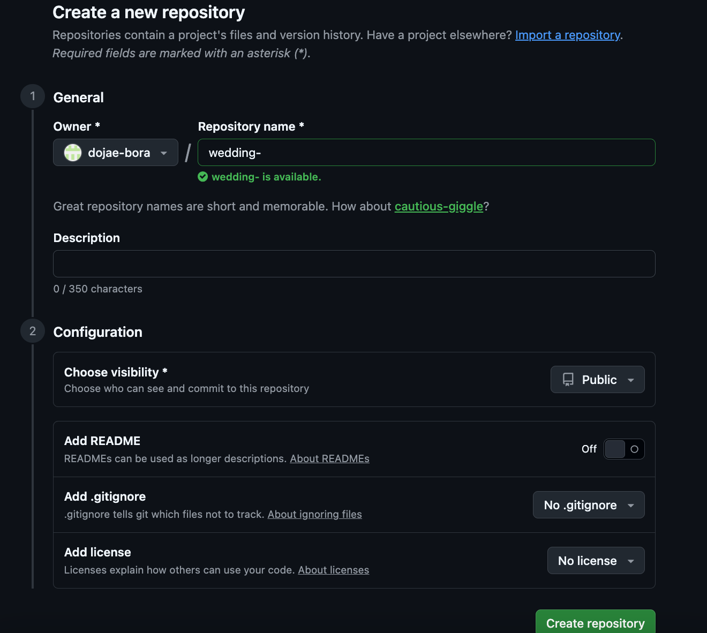
2단계GitHub Pages 활성화
💡Settings → Pages 메뉴로 이동한 뒤 아래처럼 설정합니다.
- Source: Deploy from a branch
- Branch: main
- Folder: /root
- Save 클릭
몇 분 후 https://아이디.github.io/저장소이름/ 형태의 주소가 생성됩니다.
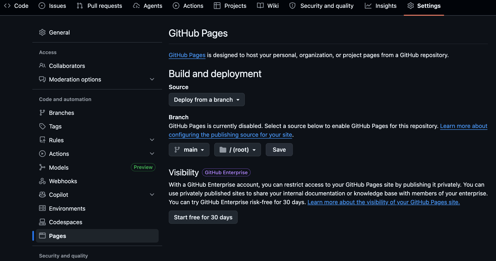
3단계파일 업로드하기
💡저장소 메인 화면에서 Add file → Upload files를 클릭한 뒤, 모바일청첩장파일 내에 있는 파일들을 모두 업로드합니다.
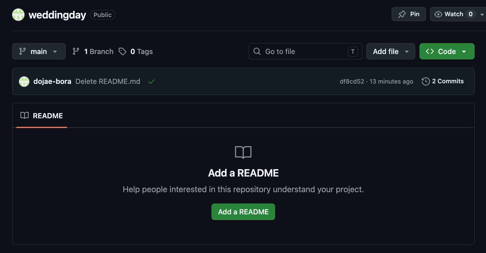
💡index.html, style.css, script.js images폴더, music폴더fmf 업로드 후 Commit changes 버튼을 누르면 저장됩니다.
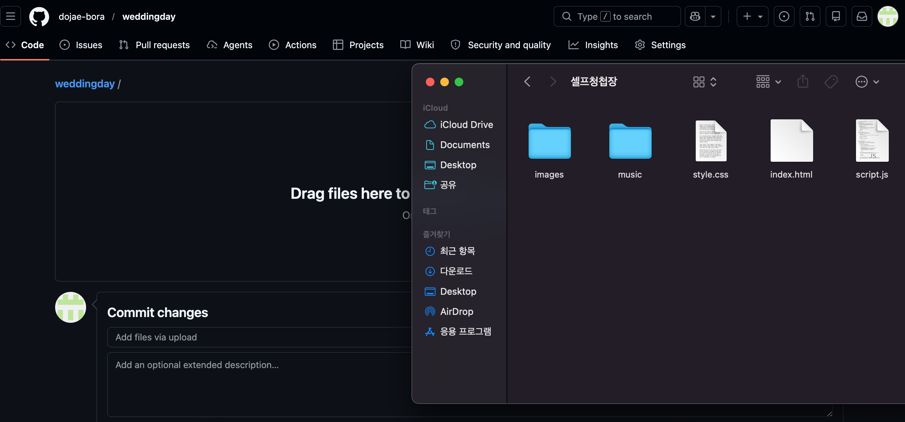
최종 파일 구조
💡업로드가 잘 되었는지 확인 후 1~2분 뒤에 내 청첩장 주소로 들어가본다. 카카오톡링크도 잘 나오는지 확인이 되면 완성!!!
👉🏻 https://아이디.github.io/저장소이름/
images/ ├─ main.jpg ├─ photo1.jpg ├─ photo2.jpg ├─ photo3.jpg └─ kakao-thumb.jpg music/ └─ bam.mp3 index.html script.js style.css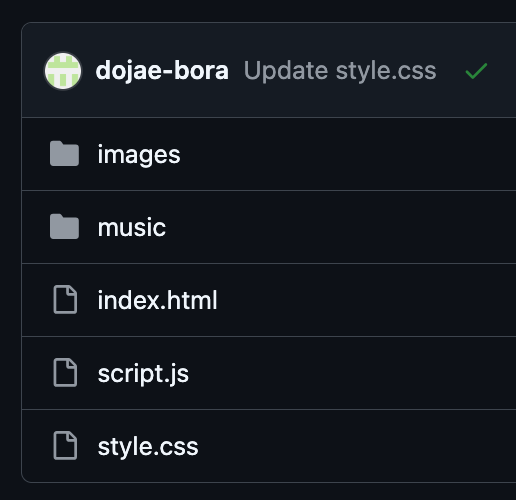
🎵 모청용 음악 AI로 만들기
💡 SUNO 앱을 다운로드한 후
스타일(Style) 칸에 원하는 음악 프롬프트를 작성하여 배경음악을 제작합니다.
제가 첨부해드린 음악도 suno를 이용해 만든 음악입니다.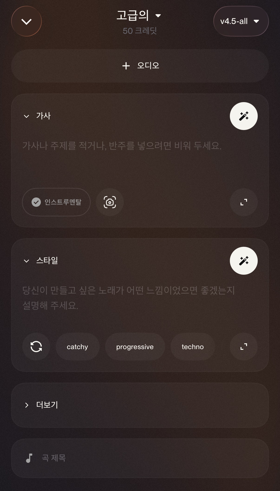